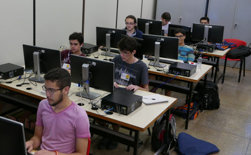
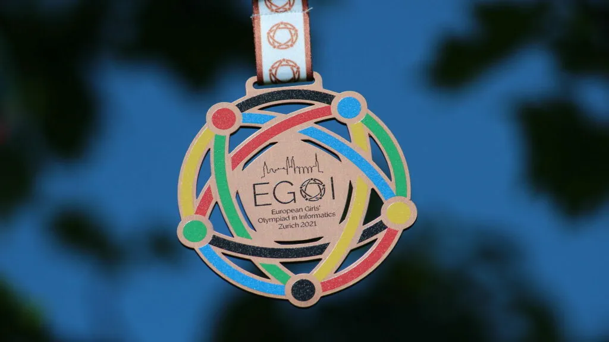
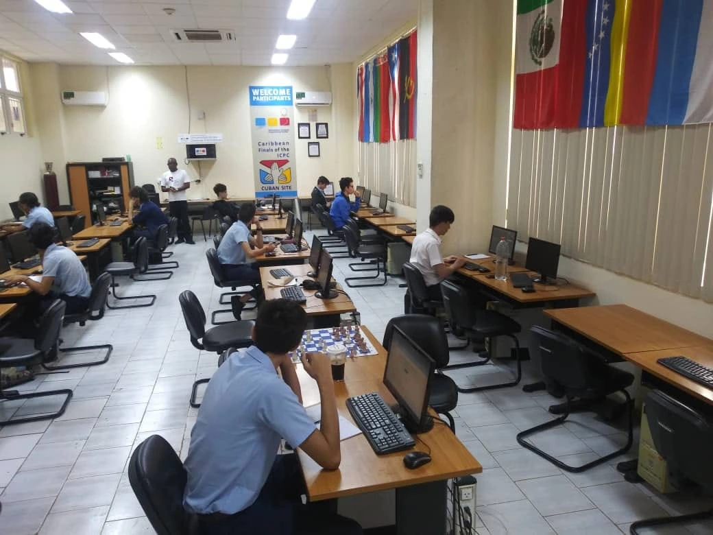

Teste sua mente participando da Iron Mind!
Entre neste desafio que leva o "Hello World" para um novo nível!
Inscreva-se já!Apresentação
A Iron Mind, assim como muitas outras maratonas de programação, é uma competição em que equipes de programadores se reúnem para resolver problemas em um curto espaço de tempo. Essa competição é comum entre estudantes e profissionais de áreas de computação, como Ciências da Computação, Engenharia de Software e Matemática.
Durante a maratona, os participantes são desafiados a criar soluções eficientes, estimulando a criatividade, a formulação de estratégias, o desenvolvimento do raciocínio rápido, o trabalho em equipe e a habilidade de desenvolver softwares sob pressão.
Inspirações
Acreditamos que toda ideia tem a sua inspiração, tanto que a Iron Mind surgiu com base em outras aqui podem ser vistos exemplos de maratonas que leveram à criação e ao desenvolvimento da nossa.
Olimpíada Internacional de Informática (IOI)
É uma das competições internacionais de programação mais prestigiadas do mundo. A primeira IOI ocorreu em 1989 e foi realizada na Bulgária. Na competição participam vários países com equipes de até quatro estudantes cada, Que são selecionados por meio de suas respectivas olimpíadas nacionais e exames, a meta é resolver quatro problemas com a duração de até cinco horas. Participam aproximadamente 88 países, totalizando mais de 350 competidores. Anualmente, a olimpíada é realizada presencialmente em um país diferente.

Olimpíada Europeia de Informática para Garotas (EGOI)
A EGOI é uma competição recente, criada em 2021 com o intuito de incentivar e aumentar a participação feminina na área, onde a parcela masculina é superior. Cada ano é sediado um país da Europa para realização do evento, é praticado de maneira individual sendo atualmente Python e C++ as duas principais linguagens de programação manuseadas.

Olimpíada Ibero-americana de Informática (OII)
A Olímpiada Ibero-americana de Informática mais conhecida pela sigla OII, foi criada em 1997 com o objetivo de alavancar a troca de experiências de jovens através de olímpiadas científicas. Na atualidade é uma das mais tradicionais olimpíadas de informática das quais o Brasil participa. É competido no formato individual com até quinze participantes cada país, os participantes recebem quatro exercícios de natureza algorítmica e tem um prazo de até cinco horas para solucionar. O Brasil se destacada todo por estar nas primeiras posições do ranking.

Conhecer mais sobre a nossa maratona